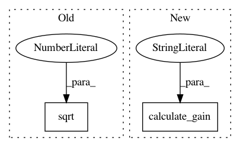

f4af48b76565ecd9a628b95dce7c66f17693a3f5,model.py,ActorCritic,__init__,#ActorCritic#Any#Any#,32
Before Change
self.conv1.weight.data.mul_(math.sqrt(2)) // Multiplier for relu
self.conv2.weight.data.mul_(math.sqrt(2)) // Multiplier for relu
self.conv3.weight.data.mul_(math.sqrt(2)) // Multiplier for relu
self.linear1.weight.data.mul_(math.sqrt(2)) // Multiplier for relu
self.train()
After Change
self.apply(weights_init)
relu_gain = nn.init.calculate_gain("relu")
self.conv1.weight.data.mul_(relu_gain)
self.conv2.weight.data.mul_(relu_gain)
self.conv3.weight.data.mul_(relu_gain)
self.linear1.weight.data.mul_(relu_gain)
In pattern: SUPERPATTERN
Frequency: 3
Non-data size: 2
Instances
Project Name: ikostrikov/pytorch-a2c-ppo-acktr
Commit Name: f4af48b76565ecd9a628b95dce7c66f17693a3f5
Time: 2017-09-27
Author: ikostrikov@gmail.com
File Name: model.py
Class Name: ActorCritic
Method Name: __init__
Project Name: ikostrikov/pytorch-a2c-ppo-acktr
Commit Name: 09e75e26ae86433d453f5bb70d5b991c2e0683a4
Time: 2017-09-27
Author: ikostrikov@gmail.com
File Name: model.py
Class Name: ActorCritic
Method Name: __init__
Project Name: pyprob/pyprob
Commit Name: 9da14aeaa19cd8cf3fa72e740892f433859e522a
Time: 2017-06-01
Author: atilimgunes.baydin@gmail.com
File Name: infcomp/modules.py
Class Name: ObserveEmbeddingFC
Method Name: __init__